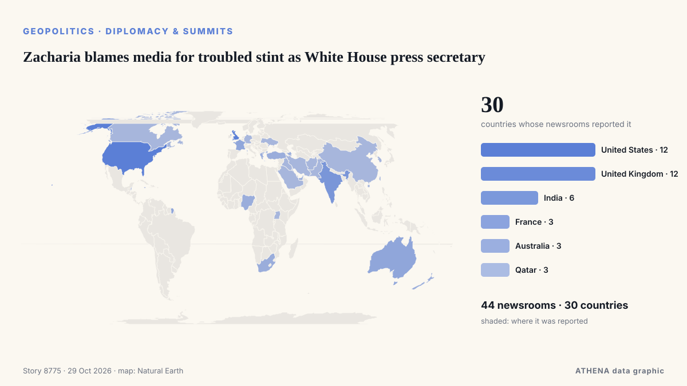

Zacharia blames media for troubled stint as White House press secretary

A White House Press official said Friday that Secretary Katie Zacharia was "let go" from her role after US President Donald Trump signaled she was on her way out, a week after he picked her for the… من France 24 English
نشرته بشكل مستقل 44 مصدرًا في 30 دولة منذ 16 أكتوبر، وأول من نشره France 24 English؛ والتغطية تتراجع. يقدّر ATHENA الخطر بأنه منخفض (1.1/10)، ويعود ذلك أساسًا إلى نطاقه الجغرافي والقطاعي وخطورة الضرر الموصوف. الثقة 87٪ (مرتفعة)، وعدد المصادر المستقلة المؤكِّدة: 44، بمتوسط موثوقية للمصادر يبلغ 75٪.
لماذا يهم: قد تغيّر التطورات الأمنية والدبلوماسية التحالفات والتجارة والأسواق إلى ما هو أبعد بكثير من الدول المعنية مباشرة.
ما الذي تغيّر: 2 تقارير جديدة من 2 غرف أخبار خلال 24 ساعة حتى 29 أكتوبر.
العنوان الأول: Trump fires White House Press Secretary Katie Zacharia
تُعرض العناوين بالإنجليزية كما نُشرت.
نظرة سريعة
اختير وقُيِّم وكُتب وفق منهجية ATHENA المنشورة. لا يتدخل أي محرر في الأحداث بعينها. كيف يُنتَج ›
| 16 Oct 15:57 UTC | 46 |
|---|---|
| 17 Oct 03:57 UTC | 12 |
| 17 Oct 15:57 UTC | 2 |
| 18 Oct 03:57 UTC | 0 |
| 18 Oct 15:57 UTC | 0 |
| 19 Oct 03:57 UTC | 1 |
| 19 Oct 15:57 UTC | 1 |
| 20 Oct 03:57 UTC | 0 |
| 20 Oct 15:57 UTC | 0 |
| 21 Oct 03:57 UTC | 2 |
| 21 Oct 15:57 UTC | 0 |
| 22 Oct 03:57 UTC | 0 |
| 22 Oct 15:57 UTC | 1 |
| 23 Oct 03:57 UTC | 1 |
| 23 Oct 15:57 UTC | 0 |
| 24 Oct 03:57 UTC | 1 |
| 24 Oct 15:57 UTC | 0 |
| 25 Oct 03:57 UTC | 0 |
| 25 Oct 15:57 UTC | 0 |
| 26 Oct 03:57 UTC | 1 |
| 26 Oct 15:57 UTC | 0 |
| 27 Oct 03:57 UTC | 0 |
| 27 Oct 15:57 UTC | 1 |
| 28 Oct 03:57 UTC | 2 |
| 28 Oct 15:57 UTC | 0 |
| 29 Oct 03:57 UTC | 2 |
| 17 Oct 11:29 UTC | 1.9 |
|---|---|
| 17 Oct 13:56 UTC | 1.2 |
| 29 Oct 14:22 UTC | 1.1 |
لماذا هذه الأرقام
الأهمية
الخطر
الثقة
التغطية — من نشر الخبر ومتى
العنوان كما نُشر · يفتح الأصل- France 24 English · فرنسا · FranceEmbattled new White House Press Secretary Zacharia 'let go' from her role
- Fast Company · الولايات المتحدة · United StatesNew White House press secretary Katie Zacharia defends her legal background and first briefing amid criticism
- to vima · اليونان · GreeceTrump Gives New White House Press Secretary Option to Quit
- Anadolu Agency (English) · تركيا · TurkeyTrump asks new White House spokeswoman Katie Zacharia to reconsider role
- PBS NewsHour · الولايات المتحدة · United StatesTrump casts doubt on press secretary Katie Zacharia's future
- Indian Express · الهند · IndiaTrump fires Katie Zacharia after five days as White House press secretary: Report
- Gulf News · الإمارات العربية المتحدة · United Arab EmiratesWhite House shake-up: Trump fires Katie Zacharia as press secretary after five days
- NPR · الولايات المتحدة · United StatesKatie Zacharia is 'transitioning out' as press secretary, White House says
- Kurdistan24 (English) · العراق · IraqFox News Reports Press Secretary Is ‘Transitioning Out’
- CBC News · كندا · CanadaWhite House press secretary Katie Zacharia leaving her role a week after starting it: official
- Times of India · الهند · IndiaTrump’s press secretary Katie Zacharia ‘let go’ five days into new job
- CNA (Channel NewsAsia) · سنغافورة · SingaporeTrump's new press secretary out after less than week
- The National · الإمارات العربية المتحدة · United Arab EmiratesWhite House press secretary Katie Zacharia praises Trump as she leaves job - after five days
- The Straits Times · سنغافورة · SingaporeTrump’s new press secretary Katie Zacharia out after less than a week
- to vima · اليونان · GreeceWhite House Press Secretary Is Out One Week After Being Named to the Role
- ABC News Australia · أستراليا · AustraliaWhite House press secretary Katie Zacharia leaves after just days in role
- Arab News · المملكة العربية السعودية · Saudi ArabiaTrump’s new press secretary out after less than week
- The Hill · الولايات المتحدة · United StatesScaramucci on Zacharia's reported firing: 'Records are made to be broken'
- Dawn · باكستان · PakistanWhite House spokeswoman Katie Zacharia 'let go' from role, official says
- The Independent · المملكة المتحدة · United KingdomTrump admits mistake and fires Katie Zacharia after less than one week as press secretary — breaking record
- Jamaica Observer · جامايكا · JamaicaTrump’s new press secretary looks close to exit after just one week
- APA (English) · أذربيجان · AzerbaijanWhite House press secretary Zacharia fired in less than a week after facing criticism
- Nile Post · أوغندا · UgandaWhite House Press Secretary Katie Zacharia Leaves Role Days After Appointment
- Vanguard · نيجيريا · NigeriaWhite House Press Secretary Katie Zacharia quits days into job
- Al Jazeera English · قطر · QatarWhite House press secretary Katie Zacharia fired after five days on the job
- SABC News · جنوب أفريقيا · South AfricaTrump reportedly fires White House spokeswoman Zacharia
- DW English · ألمانيا · GermanyWhite House press secretary Zacharia exiting role after short tenure
- Stuff · نيوزيلندا · New ZealandTrump press secretary Katie Zacharia sacked after five days
- Anadolu Agency (English) · تركيا · TurkeyTrump’s press secretary Katie Zacharia ‘transitioning out’ after 5 days
- The New Arab · INTTrump fires White House Press Secretary Katie Zacharia
- Euronews English · فرنسا · FranceTrump's new press secretary leaves after less than a week following controversy
- Arab Times · الكويت · KuwaitKatie Zacharia: She Came, She Saw … She Was Gone in Just 5 Days
- Cyprus Mail · قبرص · CyprusWhite House Press Secretary Zacharia ‘let go’ from role, official says
- Al Jazeera English · قطر · QatarTrump told new press secretary to ‘reconsider’ role
- News24 · جنوب أفريقيا · South AfricaNews24 | White House Press Secretary Zacharia ‘let go’ from role, official says
- ProtoThema English ·Trump fires Katie Zachariah as White House Press Secretary just five days after she took office
- NPR · الولايات المتحدة · United StatesKatie Zacharia is out as press secretary, White House says
- SBS News · أستراليا · Australia'It was an honour': Katie Zacharia breaks silence after White House firing
- The Independent · المملكة المتحدة · United KingdomTrump just fooled around with Susie Wiles over Katie Zacharia. And he found out
- PBS NewsHour · الولايات المتحدة · United StatesCapehart and Continetti on the White House press secretary's quick exit